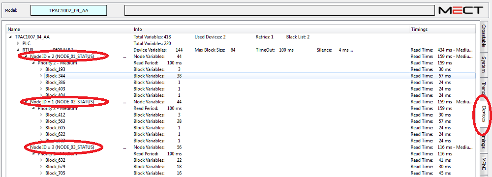

It is possible to enable or disable a Modbus RTU / TCP node using the “NODE_xx_STATUS” diagnostic variable.
Enabling or disabling the node must be performed by HMI.
Node disabled: doWrite_NODE_xx_STATUS(0);
Nodo enabled: doWrite_NODE_xx_STATUS(1);
It is possible to know the node number through the “Devices” tab.
See figure:

ATTENTION: the number associated with the variable NODE_01_STATUS, NODE_02_STATUS ... depends on the order in which the variables of the Modbus nodes are inserted in Crosstable (it does not depend on the value of the “Node ID” field).